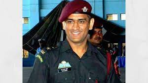

Dhoni holds an honorary rank of Lieutenant Colonel in the Parachute Regiment of the Indian Territorial Army (106 Para TA battalion). The honorary rank was presented to him by the Indian Army in 2011 for his service to the nation as a cricketer.
MS DHONI

The process is more important than the results
Mahendra Singh Dhoni ( born 7 July 1981) is an Indian professional cricketer, who plays as a wicket-keeper-batsman. Widely regarded as one of the world's greatest wicket-keeper-batsmen and captains in the history of the sport, he is known for his explosive batting, wicket-keeping and leadership skills. He was the captain of the Indian national team in limited-overs formats from 2007 to 2017 and in Test cricket from 2008 to 2014. Dhoni is the first cricketer to be a winning captain of all three major ICC trophies, as under his captaincy, India won the 2007 ICC World Twenty20, the 2011 Cricket World Cup, and the 2013 ICC Champions Trophy, the most by any captain. He also led India to victory in the 2010 and 2016 Asia Cup. Additionally, under his leadership, India won the 2010 and 2011 ICC Test Mace and 2013 ICC ODI Championship. He plays for and captains Chennai Super Kings franchise in the Indian Premier League.
